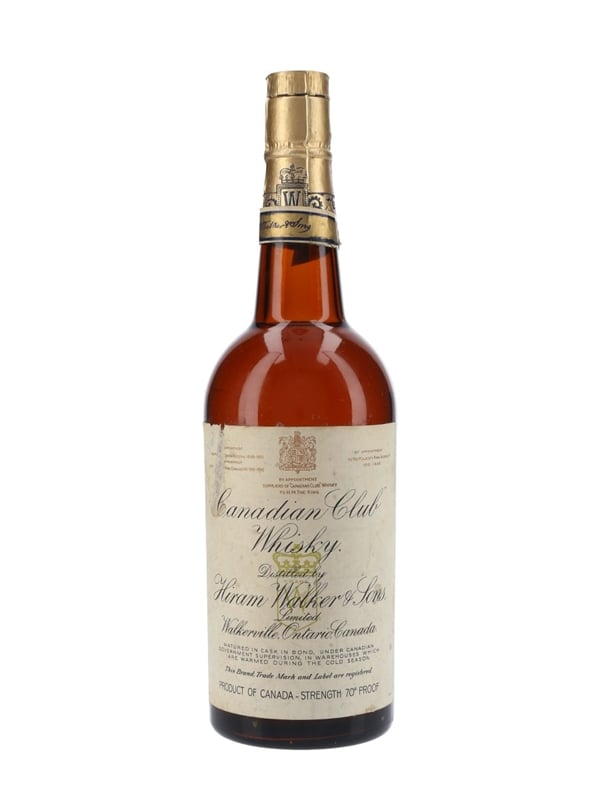

1933
1933–1954
Era 07
Repeal & the Rise of the Big Four Conglomerates
After Repeal, the "Big Four" — Schenley, Seagram, National Distillers, and Hiram Walker — controlled most major brands, having stockpiled aged whiskey through Prohibition. Heaven Hill, founded in 1935, was one of the few new independents. Americans, now accustomed to Scotch and Canadian rye, took two decades to fully return to straight bourbon.
The Big Four & Their Brands
Schenley Industries
I.W. Harper, Old Quaker, Golden Wedding Rye

National Distillers
Old Grand-Dad, Old Crow, Old Taylor
Seagram Company
Four Roses, Calvert, Kessler, 7 Crown

Hiram Walker
Gooderham & Worts, Canadian Club
Heaven Hill (independent)
Evan Williams, Elijah Craig (est. 1935)